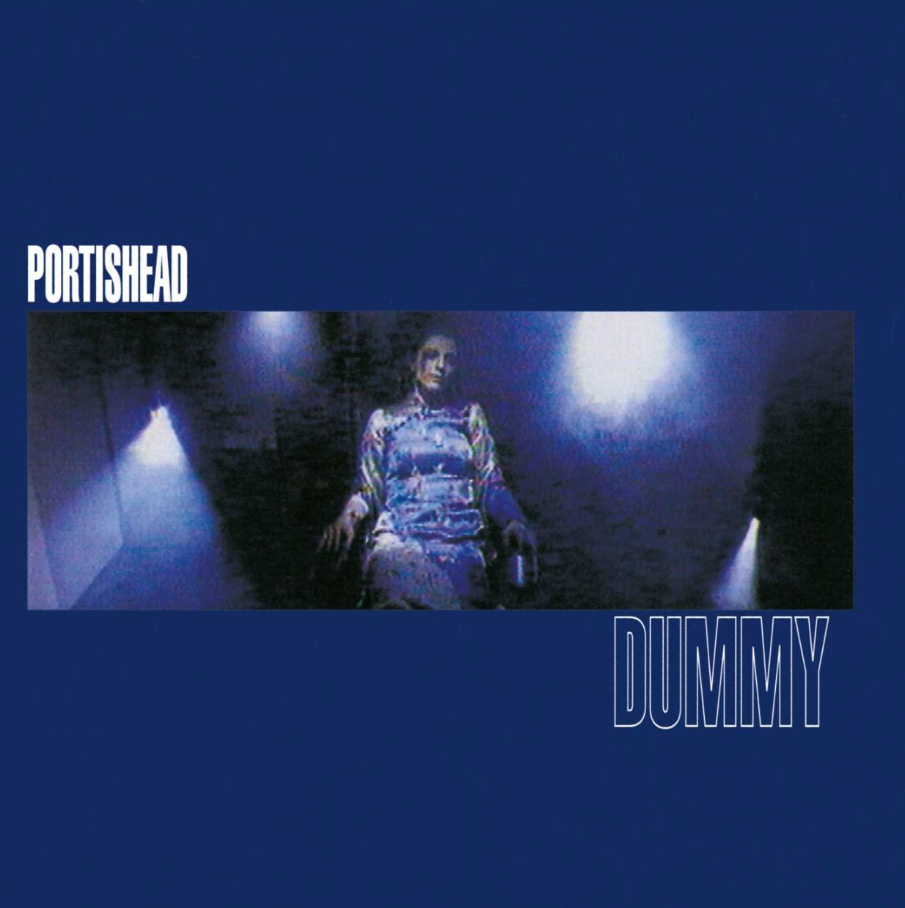

In the early nineties, singer Beth Gibbons, producer Geoff Barrow and guitarist Adrian Utley came together to form the band Portishead. In 1994, they released their debut album Dummy, which became a landmark in the trip-hop genre. Across eleven tracks, the album unfolds like a black and white film noir translated into sounds, with strings, electronic samples and Gibbons' tremendous vocals that convey feelings of longing, betrayal, and quiet devastation.
This album really captures the claustrophobia of heartbreak, the weight of loneliness, and the exhaustion of wanting something that always seems just out of reach.
My personal favorites on this record are Mysterons, Sour Times and Wandering Star. This album is great for a rainy spring day where you are feeling melancholic and in need of music that wraps your sadness in something beautiful.